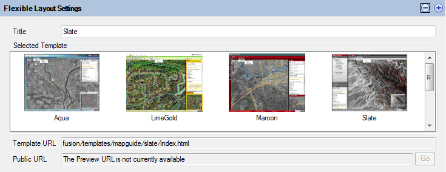

Understanding MapGuide Applications
Web Layouts
Web Layouts describe the user interface and functionality of the basic AJAX viewer. Through the Invoke Script and Invoke URL commands, custom functionality can be added to this viewer.
The Web Layout editor is composed of 3 main sections, each described below.
General Settings
The General Settings section of the editor allows you to configure the primary aspects of the web layout
- The title that is shown when the basic AJAX viewer is displayed in the web browser
- The Map Definition that this viewer will be displaying.
- The custom initial starting view.
- Visibility of certain viewer elements
- The initial task pane url

The General Settings
When saved, the AJAX Viewer URL is used to publically access this web layout from the internet or intranet.
Note
If you are making this web layout for public consumption over the internet, the host name in the AJAX Viewer URL may need to be changed to match the publically accessible domain name. This URL is generated based on the mapagent URL you used when you logged in.
Menu and Toolbar Command Layout
The Menus and Toolbars section of the editor allows you to define the command layout of the toolbar and menus in the basic AJAX viewer

Menus and Toolbars
The Available Commands box lists all the commands (built-in and custom) that can be added to the toolbar and menus
Note
Flyout Menus can only go one level deep. Although the XML schema permits nested flyout menus the AJAX viewer will not respect this.
Command Set Configuration
The Commands section of the editor allows you to add and configure custom commands.

Command configuration
The Custom Command Properties box allows you to edit the specific launch parameters of a custom command. There are 3 types of custom commands:
- Invoke Script
- Invoke URL
- Search
Note
Consult the MapGuide Developer's Guide for more information about implementing custom commands using the MapGuide API.
For built-in commands. This box provides a read-only view of the command properties.
If you have the same set of custom commands, having to re-add these custom commands to every web layout can be time consuming. The Web Layout editor provides you with the ability to export these custom commands out to an XML file. The commands in these XML files can be imported into another Web Layout.
To export commands, click the Export toolbar button and select the XML file which you wish to save these exported commands to.
To import commands, click the Import toolbar button and select the XML file containing your previously exported commands.
Application Definitions
Application Definitions describe the user interface of a Fusion viewer. The Fusion viewer is more customizable than the basic AJAX viewer in terms of looks and out-of-the-box functionality. Looks are defined in terms of templates, functionality is defined in terms of widgets. A Fusion viewer application is a specified template, loaded up with your specific selection of widgets.
The Application Definition editor is composed of 4 main sections. Each is described below.
Template Selection
The Flexible Layout Settings section allows you to select the template to use and the title to show when displayed in a web browser.

Template selection panel
When saved, the Public URL will be generated which you allows end users to access this Application Definition publically over the intranet or internet.
Note
The same public URL generation rules apply to Application Definitions as it does for Web Layouts. It is generated based on the mapagent URL you used when you logged in.
Map Configuration
The Map Configuration section allows you to specify the Map Definition that this viewer is for.

Map Configuration
In addition there are various settings for integrating your map with commercial map layers.
Note
If you use the commerical map layer integration, your map must be in the WGS84.PseudoMercator coordinate system. Otherwise your map will not line up with the commercial layers
Note
An API key is required for consuming Yahoo or Google layers. You are bound by the terms and conditions of the respective commercial layer providers you wish to use.
Widget and Container Layout
The Widgets section allows you to configure the layout of toolbar and menu widgets

Widget and Container Layout
Selecting a widget reference allows to you point to the correct widget in the widget set.
Widget Management
The Widget Management dialog allows you to configure the main map widget and to add/configure other widgets in the widget set.
Widgets in the widget set can then be referenced in the Widgets section of the editor.

Widget Management Dialog (map widget)

Widget Management Dialog (other widgets)
All widgets are edited via XML. Widget behaviour is customised by editing the <Extension> element of the widget XML. If you are not sure what elements are allowed in the widget's extension
element, you can click the Widget Info button, which will list all the available extension properties for this widget

Widget Info Dialog (for Redline widget)